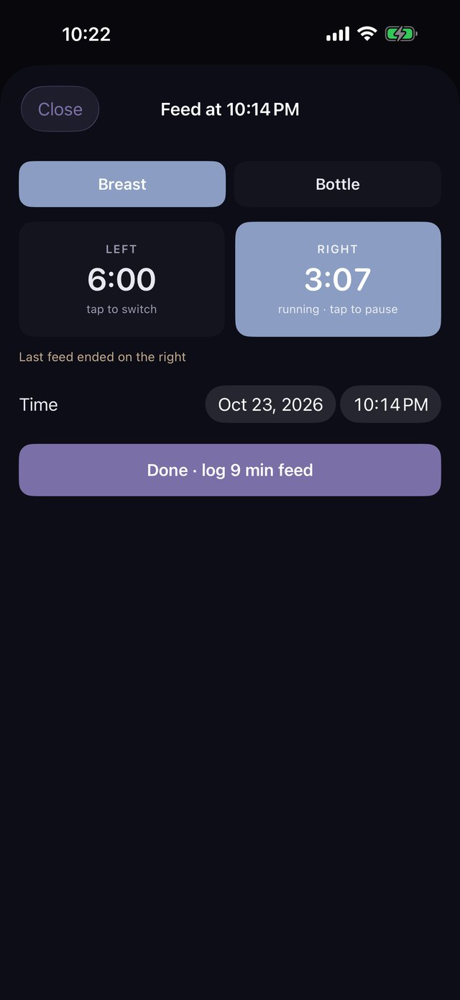
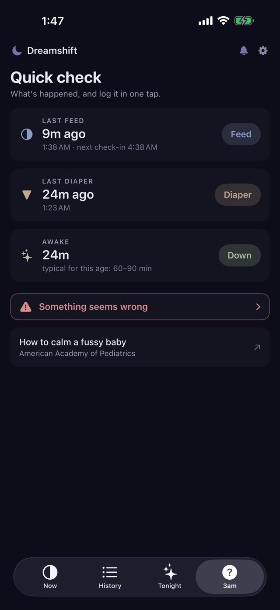
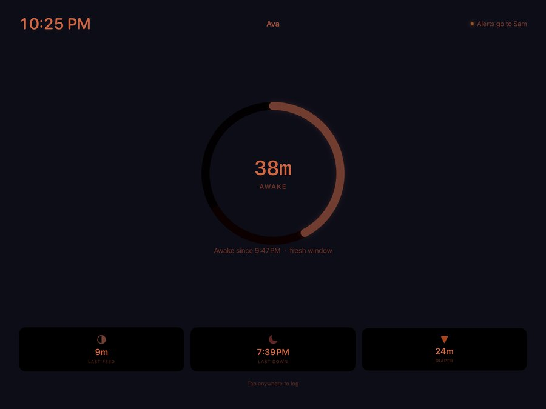
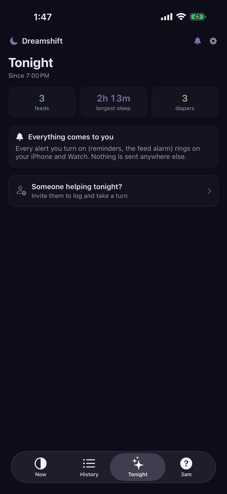
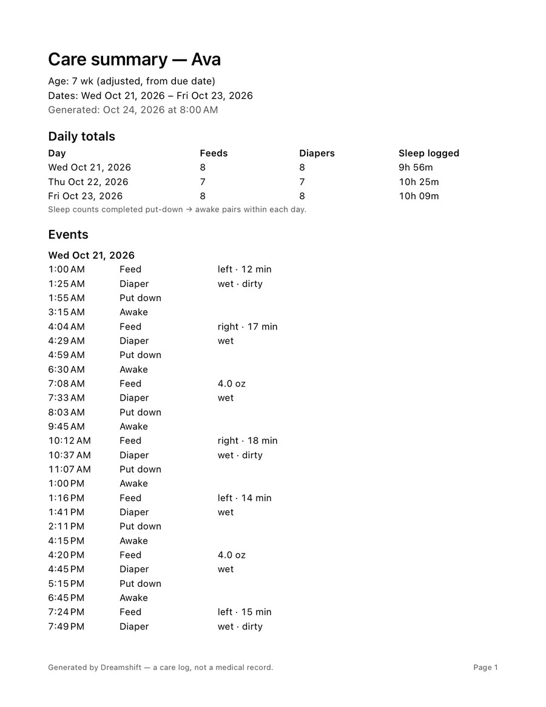

Every shift, shared.
Log a feed, diaper or nap in one tap, at 3 p.m. or 3 a.m. See what's next at a glance, and hand off to whoever's helping.
Free to log · Every feature free for 14 days · Pay once, no subscription
Log a feed in DreamshiftHands full? Just ask Siri. Free.
Around the clock.
One tap at a time.
Nothing to remember, day or night. Here's how a day goes.
Log from your wrist.
A feed at the park, stroller in one hand. Live buttons on your Apple Watch face, each with its own timer, and "Next up" tells you what's coming.
Tap Feed.
That's it.
Three big buttons: Feed, Diaper, Down. Dreamshift counts down to the next feed and puts the last 24 hours on a clock: every feed, diaper and sleep, at a glance.
Switch sides with a tap.
Side-by-side timers, or a bottle amount, only if you want the detail. It remembers which side you ended on.

Answers, not arithmetic.
Quick check shows the last feed, the last diaper and how long baby's been awake, each with a one-tap log. If something seems wrong, one tap reaches a real person.

A screen that never rings.
A spare iPad becomes a dim nursery display of where the night stands, quiet next to a sleeping baby.

Your turn, my turn.
Share one log with a partner, grandparent or night nurse, and alerts follow whoever's on duty. On your own? Everything works for one.

Every day and night, kept.
History holds every feed, diaper and nap, ready to share with your pediatrician.
Everything in reach.
Nothing in the way.
Easy on the eyes at night, quick in daylight, with big buttons for a tired thumb.
Swipe for more →
Hands full? Just say it.
Log without touching your phone, free:
- "Log a feed in Dreamshift"
- "Log a diaper in Dreamshift"
- "Log down in Dreamshift"
- "Dreamshift is asleep"
- "Dreamshift is awake"
Your last 24 hours, honestly
Feeds, diapers and sleeps on a clock, with a countdown to the next feed at the interval you set. Tap any mark for its time. A forgotten Down shows as a gap, never as hours awake.
No more setting alarms
Rings like the Clock app one interval after the last feed, and moves every time a feed is logged.
Honest about sleep
Down records the put-down. Dreamshift shows Settling, then Likely asleep, and you can confirm it sooner.
Log without opening the app
Home and lock screen widgets, Control Center and Shortcuts.
A report for the doctor
Hand over a clean summary of feeds, diapers and sleep for any dates. See the report ↓
Fits early arrivals
Born early? Ages count from the due date, so the typical ranges match your baby, not the calendar.
Learn it in a minute
A short tour after setup, a tip on the first screen, and How Dreamshift works whenever you want it.
Take every feed to the doctor.
"How often is baby feeding? How many wet diapers?" Instead of guessing from memory, hand over a clean report of exactly what you logged.
- Any dates you choose. Last week, since the last visit, or just yesterday.
- Daily totals at a glance. Feeds, diapers and sleep logged for each day, with days that had nothing logged still shown.
- Every event, in order. Times, plus the side and minutes, the bottle amount, or wet and dirty, if you added them.
- PDF to print or email, CSV for a spreadsheet. Made on your phone and shared with the share sheet; it never passes through us.
The sample uses a made-up baby. Reports say "a care log, not a medical record": they show what you logged, and your pediatrician reads them.

Your baby's log never touches our servers.
Because we don't have any. Dreamshift keeps everything on your devices and in your own iCloud.
Pay once. Keep it.
Most baby trackers charge $50–130 every year. Dreamshift Family is one purchase that you keep, for everyone on your log.
Free
- One-tap logging, Siri and Control Center
- Now screen and Quick check
- The last 7 days of history
- Joining someone's log
Dreamshift Family
- Apple Watch app and face buttons
- Home and lock screen widgets
- Feed alarm
- All your history and the pediatrician summary
- Invite someone to help
- iPad nursery display
Good to know
No. Dreamshift is a log, not a medical device or baby monitor. Typical ranges are general; your pediatrician's guidance always comes first.
No. It works fully for one caregiver. Inviting someone to help is optional.
No. Logging is free, and Dreamshift Family is a one-time purchase that covers everyone on your log.
On your devices and in your private iCloud. Delete the app and its iCloud data, and it's gone. Privacy policy
An iPhone. Apple Watch and iPad are optional. The feed alarm needs iOS 26.1 or later.
See How Dreamshift works, or write to support@dlr.solutions.